title: Explorative Datenanalyse
subject: Erweiterte Methoden der Statistik
author: Michael de Lorenzo, Stefan Ebner, Thomas Proksch, Victoria Uller
affiliation: FH Campus02
year: WS25Einleitung
Bei den Daten handelt es sich um eine Umfrage zu dem Thema Smart Home Technologies (SHT). Der Datensatz besteht aus 960 Zeilen (Teilnehmer) und 283 Spalten (Fragen). Wobei von den Merkmalen nur ein Bruchteil bekannt ist.
Data cleaning
Die Ausprägungen werden den entsprechenden Datentypen zugewiesen. Das sind hauptsächlich ordinale Daten (Likert-Skala).
überblick
Um einen Eindruck des Datensatzes zu gewinnen, wurden alle Fragenblöcke visualisiert.
Demographische Daten
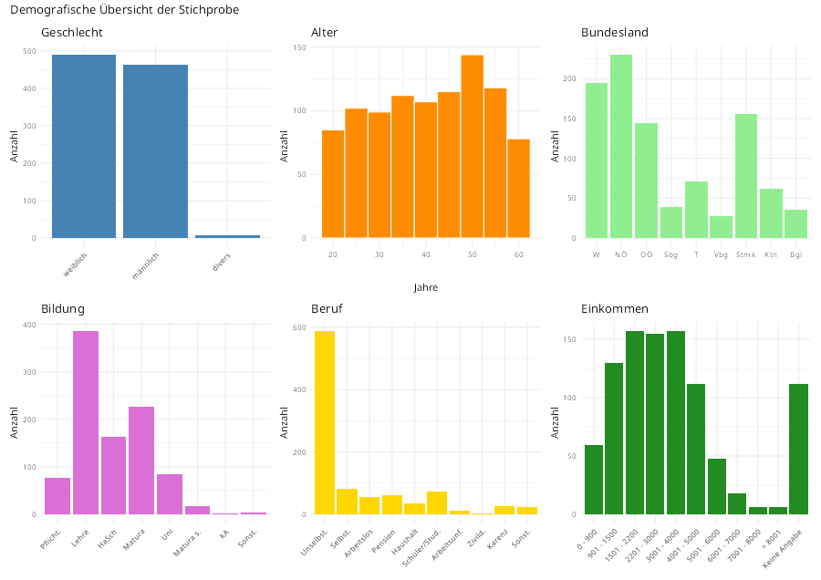
Hauptfragen
Wie bei den demographischen Daten wurden die Blöcke der Hauptfragen für eine Übersicht visualisiert.
Wichtigkeit der Vorteile durch Nutzung SHT
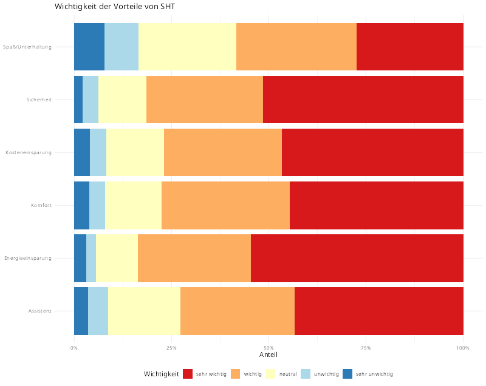
Sehr ausgegeglichenes Bild. Spannenderweise ist der Unterhaltungsfaktor am unwichtigsten.
Verfügbarkeit und Interesse an SHT
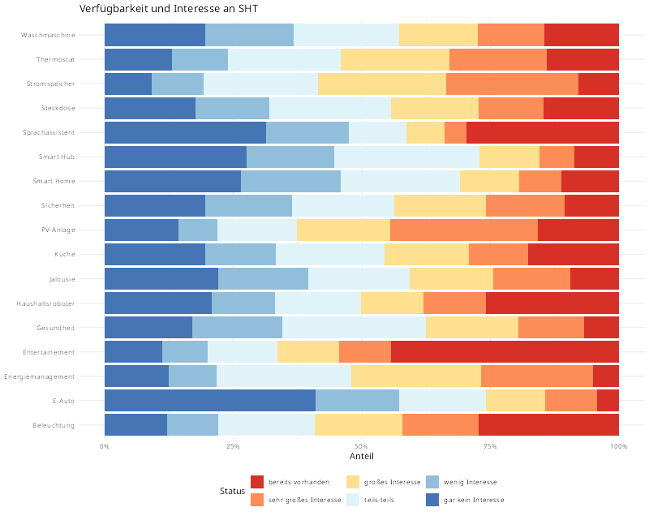
Bei der Frage nach Vorteilen durch Nutzung SHT war Unterhaltung am wenigsten wichtig, hier zeigt sich, dass die meisten Befragten bereits SHT im Bereich Unterhaltung besitzen. E-Autos sind unter den Teilnehmer total uninteressant.
Komfortgewinn durch Nutzung SHT
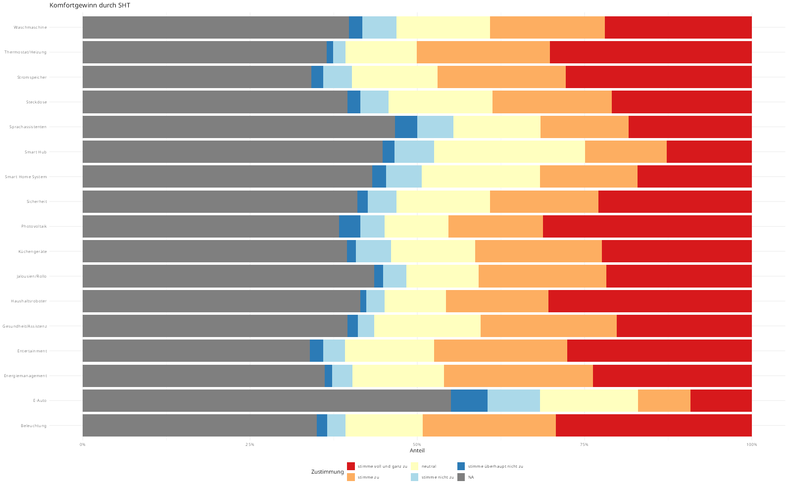
Die meisten Teilnehmer sehen einen Komfortgewinn durch die Nuztung von SHT, abgesehen vom E-Auto.
Assistenz durch SHT
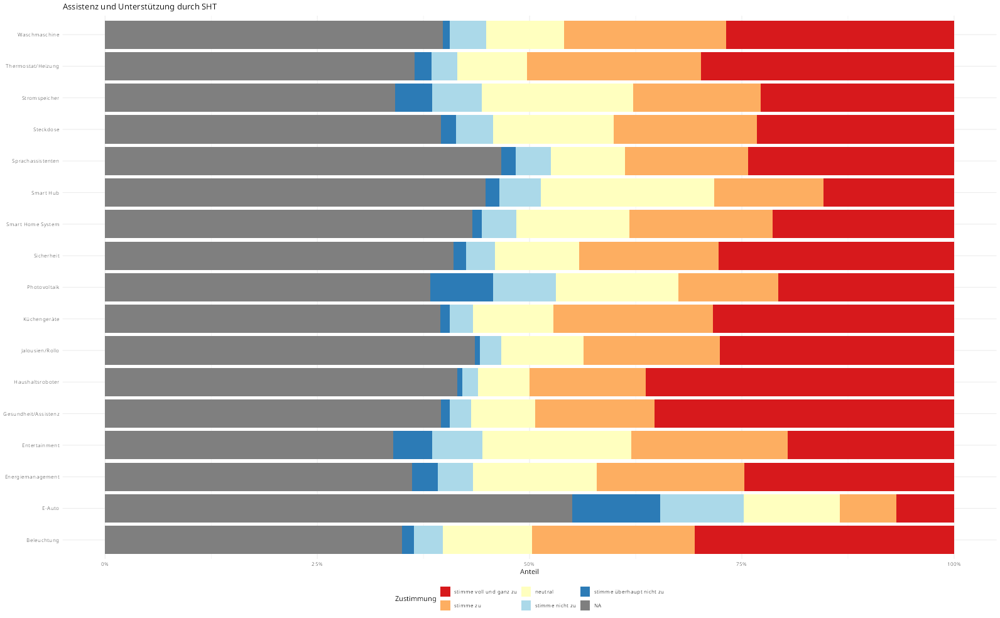
Frage ist durch sehr viele NA’s geprägt. Wir meinen, dass sich die Mehrheit der Befragten durch die Nutzung von SHT unterstützt fühlen.
Auswirkung der Nutzung von SHT auf Energieeinsparung
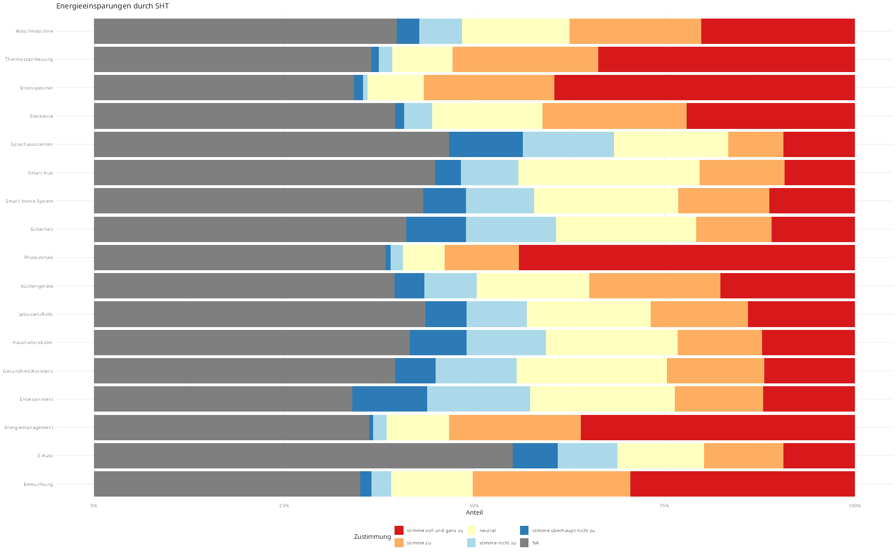
Auch bei diesen Fragen sehr viele NA’s. Dennoch zeigt das Bild, dass die meisten Teilnehmer vor allem in den Punkten Strom und Energie durch die Nutzung von SHT sparen können.
Auswirkung auf Sicherheit durch Nutzung SHT
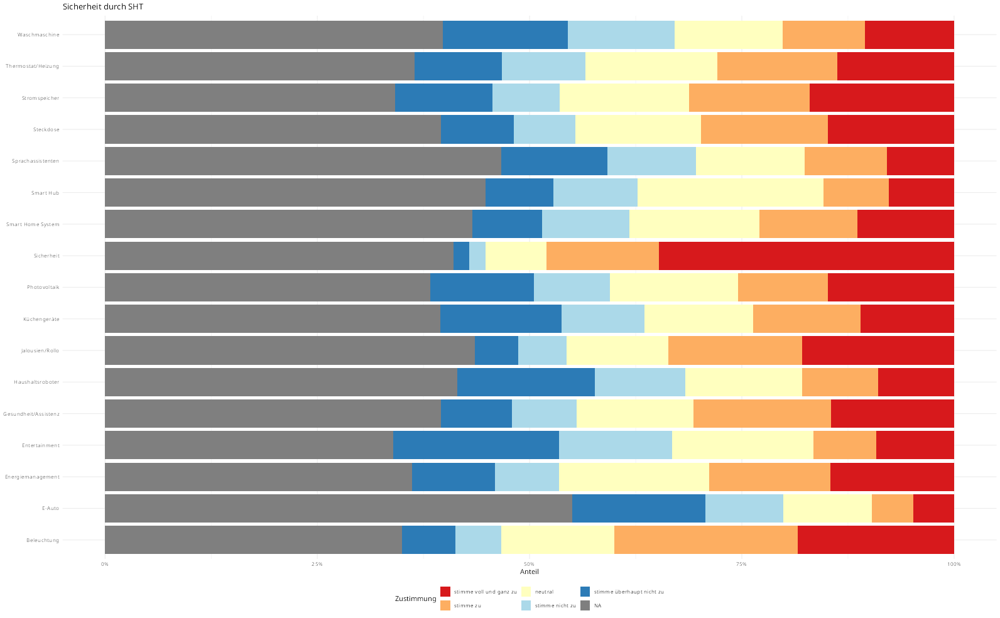
Die Teilnehmer sind der Meinung, dass sich die Nutzung von SHT nicht positiv auf die Sicherheit auswirkt.
Auswirkung auf Spaß und Unterhaltung durch Nutzung SHT
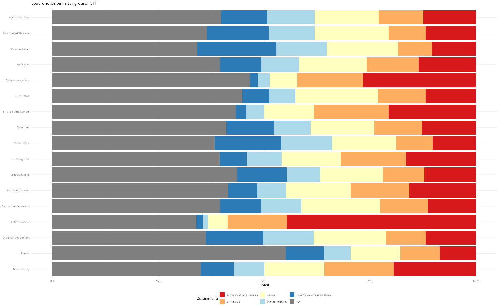
Die Frage ist etwas seltsam, da wir nicht nachvollziehen können inwiefern sich SHT auf den Unterhaltungsfaktor einer PV-Anlage auswirken soll.
~40% der Teilnehmer stimmen allerdings zu, dass sich SHT im Bereich Unterhaltung, auf den Spaß- und Unterhaltungsfaktor auswirkt.
Auswirkung auf Kosteneinsparung durch Nutzung SHT
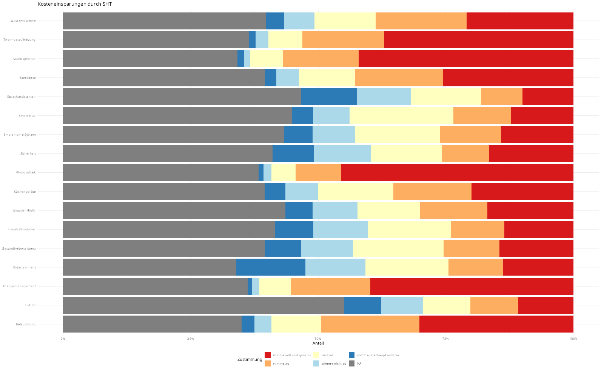
Viele Teilnehmer stimmen zu, dass sie, vor allem in Bereich Strom und Energie, Kosten durch die Nutzung von SHT sparen können.
Meinungen zu SHT
Der folgende Fragenblock wurde in zwei Bereiche unterteilt, da man diese bereits durch die unterschiedlichen Fragestellungen gut trennen kann.
- Technikaffinität
- Energiesparmaßnahmen
Technikaffinität
{kind=link}
Der Großteil der Befragten würde sich als Technikaffin beschreiben und hat wenig Angst vor neuer Technik.
Energiesparmaßnahmen
{kind=link}
Die Teilnehmer zu, dass herkömmliche Maßnahmen (Stoßlüften, etc.), um Energie zu sparen, wirksam sind.
Steuerung SHT
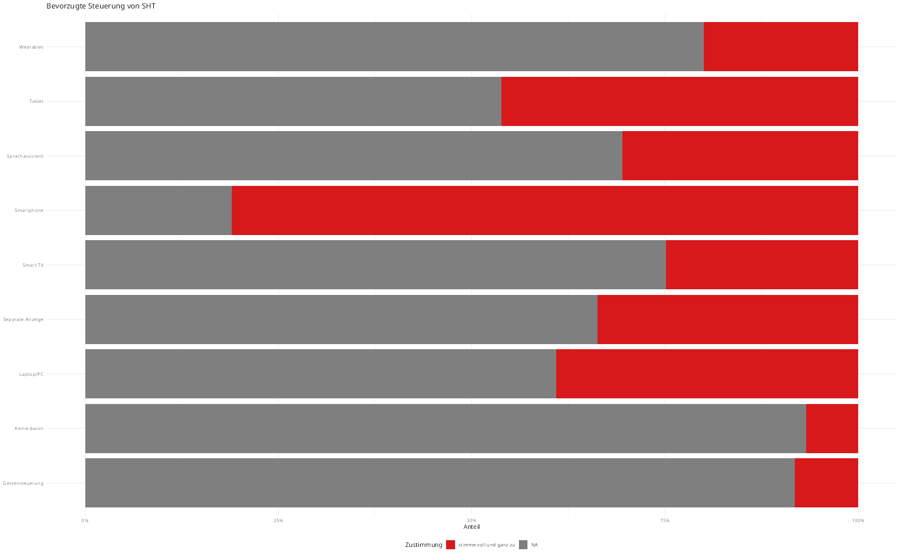
Eine Steuerung durch Smartphone ist die klar präferierte Lösung.
Finanzierung SHT
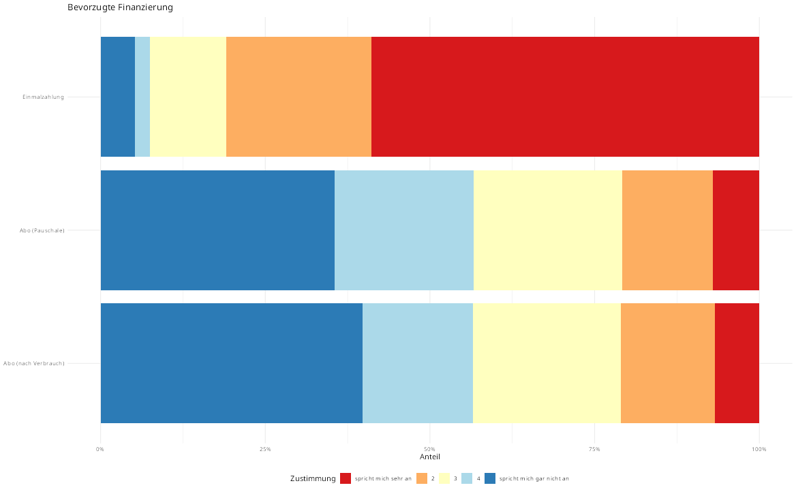
Informationsgewinn SHT
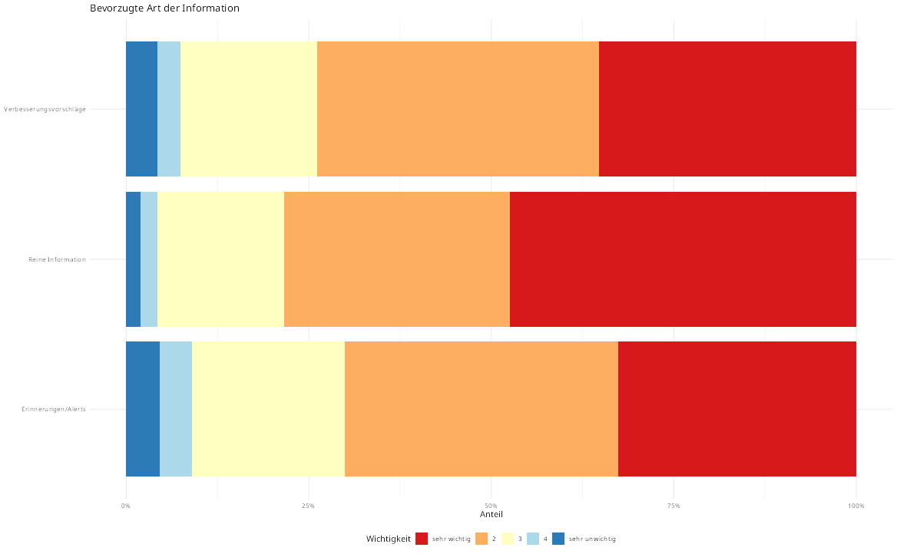
Design SHT
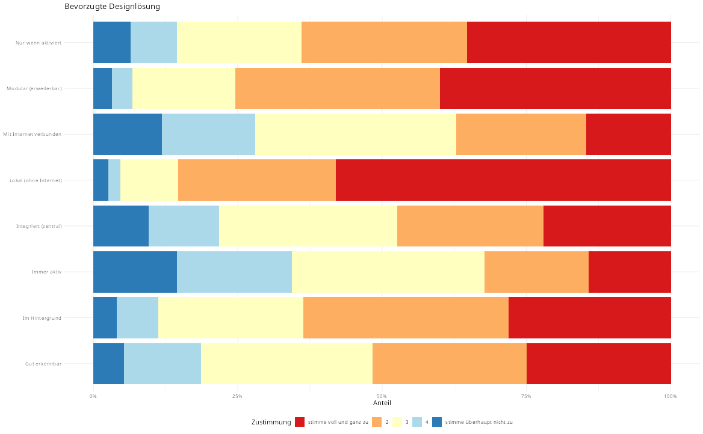
Steuerung SHT
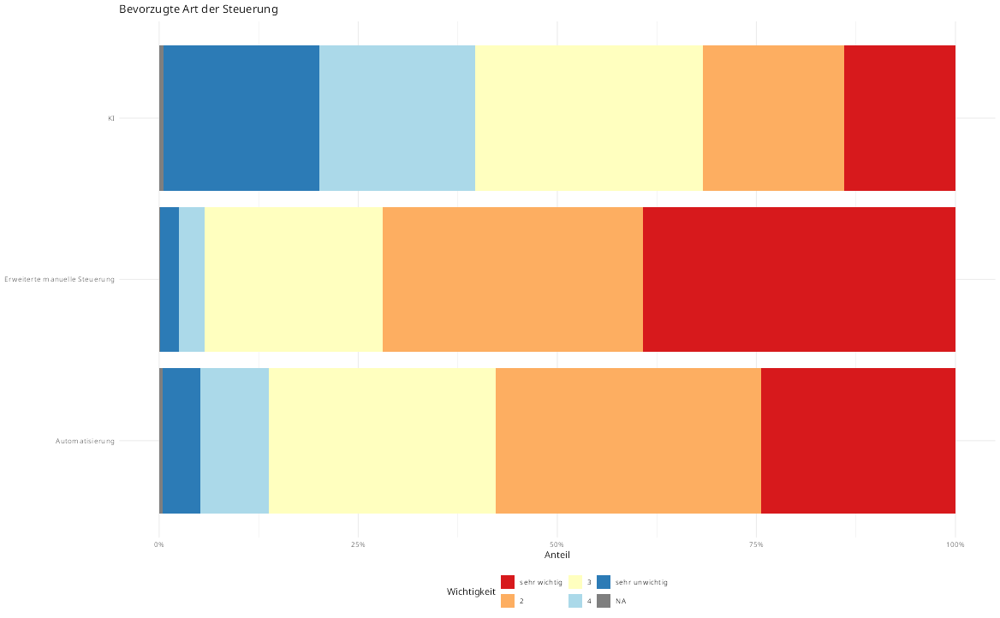
Nachhaltigkeit SHT
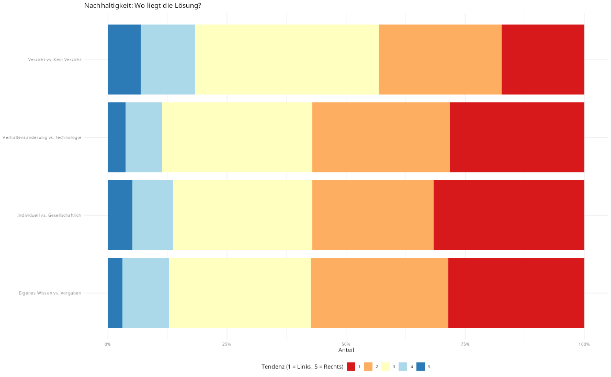
Klima- & Umweltbewusstsein SHT
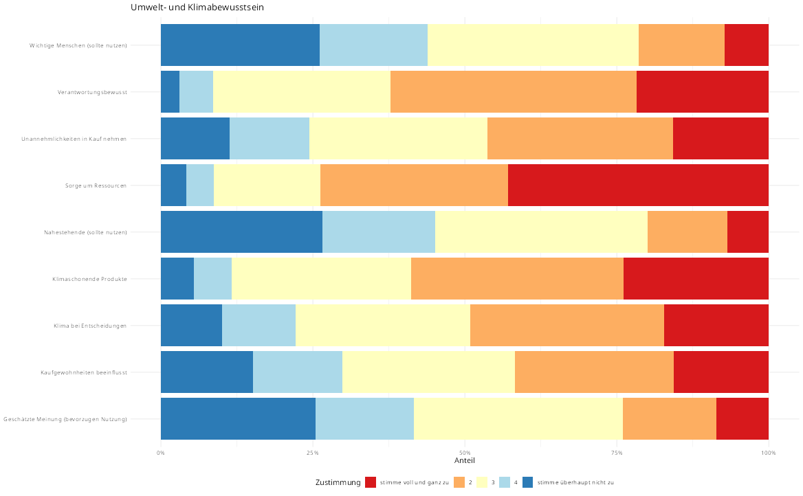
Korrelation unter Hauptfragen
In jeder Hauptfrage wurde der Median der Antworten der Befragten gebildet und untereinander verglichen. In weiterer Folge sollen die einzelnen Fragen der stark korrelierenden Hauptthemen analysiert werden.
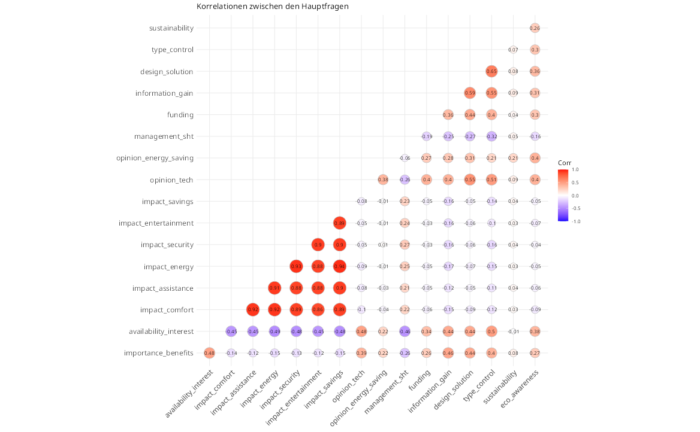